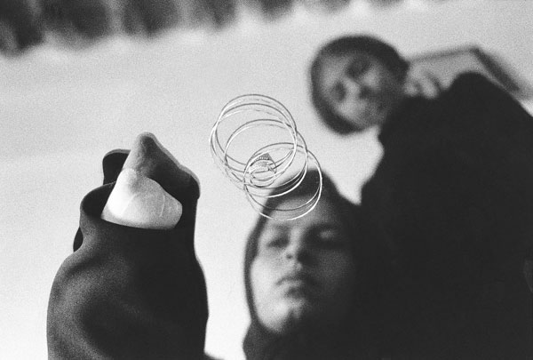

|
|

دشمنی که در زمان صلح هم قربانی می گیرد
گفتگوی نیکزاد زنگنه با ثریا عزیزپناه درباره زنان قربانی مین در ایران
دو شنبه4 اردیبهشت 1391
گرچه جنگ ایران و عراق در سال 1367 پایان یافت اما پیامدهای مخاطره آمیز و نامطلوب آن مانند هر جنگ دیگری همچنان به انحای مختلف گریبانگیر کشور است. بی شک یکی از این پیامدهای آسیب زا، معضل مین گذاری در کشور است؛ معضلی که زندگی قربانیان خود و اطرافیان آنها را تا پایان عمر تحت تاثیر قرار می دهد.
محمدحسین امیراحمدی رئیس مرکز مین زدایی ایران گفته است که پس از مصر، ایران دومین کشور آلوده به مین در جهان از نظر حجم و وسعت آلودگی است و هیچ کشوری از لحاظ تنوع، وسعت و توسعه مینها به اندازه ایران گرفتار نیست. ایران تاکنون دو تفاهم نامه با طرف عراقی خود امضاء کرده و قرار بر این بود که نقشه های مناطق آلوده در خاک ایران را در اختیار این کشور بگذارند اما تا به امروز کشور عراق نقشه ای در اختیار ایران نگذاشته است. مقامات عراقی اکنون می گویند که نقشه ای موجود نیست. به استناد اطلاعات موجود در تفاهم نامه همکاری مشترک مین زدایی بشردوستانه ایران – عراق که در سال ۱۳۸۴ امضا شد، بیش از ۲۰ میلیون مین از انواع مختلف در خاک ایران کارگذاشته شده است[1].
در طول سال های پس از جنگ، انسان های بسیاری قربانی مستقیم یا غیرمستقیم مین گذاری در ایران هستند اما به گواه آمار موجود، زنان به عنوان بخشی از این جامعه آماری وضعیت اسفناکی دارند. در مطالعه تحقیقاتی که سروش و همکارانش در استانهای غربی و جنوب غربی ایران یعنی استانهای آذربایجان غربی، کرمانشاه، خوزستان، ایلام و کردستان در بین سال های 1367 تا 1382 شمسی درباره ی زنان و دختران مصدوم یا کشته شده توسط انفجار مین انجام داده اند به نتایج جالب توجه و غم انگیزی رسیده اند. جنگ ایران و عراق در سال 1367 به پایان رسید. در دوره ی 15 ساله ی پس از جنگ یعنی بین سال های 1367 و 1382 شمسی تعداد 252 زن و دختر در استان های پنجگانه بالا توسط انفجار مین کشته شده یا مبتلا به نقص عضوگردیده اند. کلیه 252 حادثه به تائید مقامات رسمی درمانگاه ها و مراکز درمانی آن استان ها رسیده است. سن متوسط این قربانیان 19 سال است . لازم به یاد آوری است که رقم کل کشته شدگان زن و مرد و معلولان ناشی از انفجار مین دراین 5 استان در این دوره ی 15 ساله برابر 3708 نفر بوده است. از آنجا که زنان کمتر از خانه بیرون می روند، تعداد قربانیان مرد به نسبت آنان بالاتر بوده است. به طوری که براساس اطلاعات به دست آمده، تعداد قربانیان مرد 3456 نفر است. در میان استان ها بالاترین رقم کشتار به استان کردستان تعلق دارد. طبق آمار حاصله از این تحقیق، 47 در صد از زنان در این مطالعه مجبور به قطع عضو و 21 درصد آنها به مرگ منتهی شده است[2].

پرداختن به آمار کمی زنان قربانی مین گذاری شاید بسیار ساده تر از آگاه شدن از کیفیت زندگی این افراد باشد. از این رو برای پرداختن به چند و چون زندگی این زنان در ایران با خانم ثریا عزیزپناه، روزنامه نگار کرد، مدیر مسئول نشریه راسان (نشریه بومی استان کردستان) و محقق و مطلع محلی به گفتگو نشسته ایم.
نیکزاد زنگنه: کدام مناطق ایران با معضل مین گذاری و پیامدهای آن دست به گریبان هستند؟
ثریا عزیزپناه: 5 استان کردستان، کرمانشاه، خوزستان، آذربایجان غربی و ایلام به ویژه در نواحی مرزی از زمان اتمام جنگ تا کنون درگیر معضلات ناشی از مین گذاری هستند.
زنگنه: چرا با گذشت این همه سال از پایان جنگ، هنوز این معضلات به قوت خود باقی است؟
عزیزپناه: در دسترس نبودن نقشه مناطق مین گذاری شده، گذشت زمان، عوامل جوی مانند فرسایش خاک، سیلاب، بارندگی و طوفان، گسترش شهرها و تبدیل شدن نقاط مین گذاری شده به مناطق مسکونی باعث شده که این استان ها - به ویژه در مناطق مرزی- هنوز با این مسئله مواجه باشند.
زنگنه: شاید تعداد قربانیان مین از طریق آمارها به نوعی در دسترس باشد اما بخش مهم قضیه، کیفیت زندگی قربانیان و اطرافیان آن هاست که مستقیم و غیرمستقیم درگیر این معضل هستند. در این میان وضعیت زندگی زنان قربانی مین چگونه است؟
عزیزپناه: زنان قربانی مین دو دسته هستند. اول زنانی که خود قربانی مستقیم هستند. این زنان افرادی هستند که بر اثر برخورد با مین دچار معلولیت های ویژه می شوند. معمولا اعضای حرکتی یا اعضای حیاتی این زنان مانند چشم آسیب می بیند. دسته دوم زنانی هستند که فرزند یا همسر یا یکی از اعضای نزدیک خانواده آنها دچار حادثه می شود. هردو دسته مشکلات خاص خود را دارند.
زنگنه: دسته اول یعنی زنانی که در حادثه مین دچار نقص عضو شده اند با چه دشواری هایی مواجه هستند؟
عزیزپناه: این زنان اگر زیر سن ازدواج باشند معمولا شانس تشکیل خانواده را از دست می دهند. نمی گویم همه آنها به این سرنوشت دچار می شوند اما این اتفاق در مورد اکثر این دختران می افتد. دلیل اصلی این مسئله آن است که در زندگی عشایری و روستایی، زنان به طور مستقیم در تامین معیشت خانواده نقش دارند. وقتی این زنان بر اثر حادثه اعضای حیاتی بدن خود مانند پا یا چشم را از دست می دهند، مسلما نه تنها قادر به کار کردن نیستند بلکه نیاز به دریافت حمایت و رسیدگی هم دارند. به این ترتیب یک عضو اثربخش جامعه کارایی خود را برای همیشه از دست می دهد. مشکل دیگر، نگاه جامعه به این دختران است. جامعه ما فاقد فرهنگ معلولیت است و عدم برخورد انسانی با معلولان، حضور آنها در فضای عمومی را با مشکل مواجه می کند. این زنان اکثرا از جامعه منزوی و به طرد اجتماعی دچار می شوند زیرا در خانه نشستن را به عذاب کشیدن زیر نگاه های افراد ترجیح می دهند. این معضلات در مورد مردان هم وجود دارد اما به طور یقین فراوانی آن در زنان بسیار بیشتر است.
زنگنه: دسته دوم که زنانی از خانواده قربانیان مین گذاری هستند، چه سرنوشتی دارند؟
عزیزپناه: وقتی مرد یک خانواده روستایی و عشایری در نقاط مرزی بر اثر نقص عضو ناشی از مین خانه نشین می شود، تمام مسئولیت های سنگین زندگی متوجه زن این خانواده خواهد شد. من فراوانی این مسئله را دقیقا نمی دانم اما مشاهدات عینی من از زندگی این زنان گویای دشواری جانکاهی است که آنها از لحاظ اقتصادی و اجتماعی متحمل می شوند. در این مناطق امرار معاش از طریق مشاغل خارج از حوزه کشاورزی و دامداری، مرسوم نیست. به همین دلیل زنانی که برای تامین معیشت به مشاغلی چون آرایشگری یا خیاطی روی می آورند، به شدت تحت فشار هنجاری هستند. برای مردان این خانواده نان آور بودن زن باعث سرشکستگی است. به حدی که در برخوردهای حضوری من با این خانواده ها، مردان حتی از بیان این موضوع که همسر آنها سرپرست خانوار است در عذاب بودند.
زنگنه: چه اقداماتی برای حمایت اقتصادی و اجتماعی از این قربانیان به ویژه زنان صورت می گیرد؟
عزیزپناه: تحت پوشش این حمایت ها قرار گرفتن، فرآیند فرسایشی و زمان بری دارد که بعضا سال ها طول می کشد. پیش از هر اقدامی باید کروکی محلی که حادثه در آن اتفاق افتاده ارائه شود. همین مسئله دشواری های بسیاری ایجاد می کند چون این حوادث در مناطق خطر اتفاق می افتد و تهیه کروکی از آنها خود می تواند آبستن خطرات جدیدی باشد. در مراحل بعد کمیسیون تشکیل می شود که نمایندگانی از نهادهای مختلف در آن شرکت می کنند اما از طرف قربانی نماینده ای حضور ندارد که از منافع او دفاع کند.
زنگنه: یعنی تا حالا هیچ اقدامی برای تسهیل این فرآیند انجام نشده است؟
عزیزپناه: تغییراتی با تلاش نمایندگان 5 استان مذکور در مجلس هفتم صورت گرفت. به این ترتیب که قرار شد این کمیسیون ها دیگر فقط در مراکز استان تشکیل نشود و فرمانداری ها هم بتوانند این خدمات را ارائه بدهند تا رفت و آمد و پیگیری مطالبات برای قربانیان و خانواده آنها راحت تر شود. ائمه جماعات و نمایندگان ولی فقیه هم به این کمیسیون ها اضافه شدند که البته حق رای نداشتند. اما در کل، این اقدامات تاثیرات چشمگیری نداشت. این فرآیند باید کوتاه باشد. هرکس به صرف دچار حادثه مین گذاری شدن باید تحت پوشش قرار بگیرد. نباید قید و شرطی برای حمایت از این افراد وجود داشته باشد. این دشواری های ایجاد شده برای قربانیان حوادث مین گذاری، مرد و زن نمی شناسد.
زنگنه: آیا مراکز درمانی ویژه ای برای افراد قربانی مین گذاری در این 5 استان وجود دارد؟
عزیزپناه: اگر افراد تحت پوشش بیمه جانبازی قرار بگیرند - یعنی فرآیندی که در بالا گفته شد را تا آخر طی کنند- از خدمات مناسبی برخوردار می شوند. کمیته امداد و بهزیستی هم تا حدی به این افراد کمک می کنند. اما مرکز درمانی یا بیمارستانی که به طور مستقل روی این موضوع متمرکز باشد وجود ندارد. این درحالی است که اقدامات اولیه در مورد قربانیان حادثه بسیار حیاتی و سرنوشت ساز است.
زنگنه: پاکسازی مناطق مین گذاری شده چطور پیش می رود؟
عزیزپناه: پاکسازی دارد انجام می شود اما به دلیل تحریم های موجود سال هاست که وسایل مین زدایی جدید وارد نمی شود. ابزار مین زدایی مورد استفاده بسیار قدیمی، ناکارآمد و صرفا مکانیکی هستند. این در حالی است که امروزه وسایل جدید مین زدایی در دنیا مکانیزه شده و تلفات آن به حداقل رسیده اند. اما ما به دلیل عدم دسترسی به امکانات جدید، هر روز شاهد از دست دادن نیروهای انسانی پاکسازی کننده هستیم که اکثرا نظامی های بازنشسته با سابقه هستند. اخبار مربوط به این حوادث اکثرا در مطبوعات منعکس می شود. البته این افراد همگی از ابتدای کار تحت پوشش بیمه هستند.
زنگنه: چه کسانی می توانند در طرحِ بحث و جلب توجه افکار عمومی به قربانیان حوادث مین گذاری موثر باشند؟
عزیزپناه: نمایندگان این 5 استان در مجلس می توانند سهم عمده ای داشته باشند. فعالان حقوق بشر، جامعه مدنی و مطبوعات نیز وظیفه دارند این معضل را مطرح کنند. این مسئله یک بحث انسانی است.
زنگنه: و سخن آخر؟
عزیزپناه: بحث قربانیان حوادث مین گذاری، یک بحث کمی نیست و باید با شاخص های انسانی به آن پرداخت. نمی توان گفت چون قربانیان تصادفات رانندگی در ایران طبق آمار حدود 24 هزار نفر هستند، پس پرداختن به حوادثی که قربانیان محدودتری دارد، بی معنا است. معلولیت ناشی از حوادث مین گذاری، قربانیان و خانواده آنها را دچار دشواری های اقتصادی، اجتماعی و روانی بسیاری می کند. معلولیتی که تحمیلی و خارج از اراده این افراد است و باید خیلی بیشتر مدنظر مسئولان قرار بگیرد.
زنگنه: ممنون از وقتی که در اختیار سایت تا قانون خانواده برابر گذاشتید.
عکس لوگواز رها عسگری زاده
عکس داخل متن از مهدی منعم
[1] -http://www.bbc.co.uk/persian/iran/2...